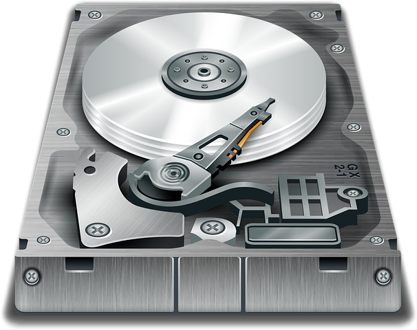
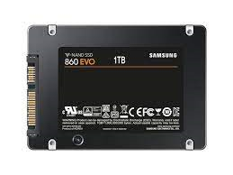

Webbsidan om datorer
Webbsidan om datorer
Hårddisk
En hårddisk är en lagringsenhet för Windows, program, filer, dokument, etc. Den har flera roterande skivor som är belagda med ett magnetiskt material. En läsarm rör sig över skivorna för att skriva eller läsa data till/från disken när läsarmen befinner sig under läshuvudet. Hårddiskar rymmer mellan 100GB och 16 TB (2020).
Lägg märke till att hårddiskkapacitet räknas på två sätt - med SI-prefix samt med binära prefix. Detta leder till att en hårddisk som säljs som 1 terabyte (TB) (1000 GB eller 1024 GiB) visas som cirka 931 GiB eftersom det går 1024 steg på varje binärprefix istället för 1000 för vanliga SI-prefix. Alltså 1TB = 1000 GB = 1 000 000 MB = 1 000 000 000 KB = 1 000 000 000 000 B. 1 TiB = 1024 GiB = 1 048 576 MiB = 1 073 741 824 KiB = 1 099 511 627 776 B. Så 1 TB / 1GiB blir då hur många GiB det går på en TB som då bli ungefär lika med 931 GiB. Det är inte de binära prefixen (men väl de binära talvärdena) som visas i till exempel Microsoft Windows och i detta fall skulle en 1 TB hårddisk stå som 931 GiB i kapacitet (trots att Windows använder det felaktiga prefixet GB). Detta för att när man inte hade så stora hårddiskar som man har idag så var det okej att avrunda 1024 till 1000 i form av prefixet kilo. Men när hårddiskarna blivit allt större så har också felet ökat då man tar 1024x1024x1024 och så vidare, och man var tvungen att skapa ett nytt prefix och kalla det binära prefix med 1024 steg istället för 1000. (källa: Wikipedia)
I de första hårddiskarna roterade skivorna med 3600 rpm, därefter kom det hårddiskar med 4500 och 5400 rpm. Under slutet av 90-talet lanserade Fujitsu världens första hårddisk med 7200 rpm skivhastighet. Om en hårddisk tappas eller får en stöt kan den gå sönder och börja ticka/klicka. Det finns även hårddiskar med 10 000 och 15 000 rpm.
SSD
En SSD är en typ av hårddisk som inte innehåller mekaniska rörliga delar och istället består av flashminnen. En SSD fungerar ungefär som en vanlig hårddisk, men innehåller inga rörliga delar och är snabbare än en vanlig hårddisk och helt tyst och längre hållbarhet. Nackdelen med SSD är att de är dyrare än mekaniska hårddiskar. En SSD finns i formaten m.2 och SATA. M.2-diskarna är snabbare än de som är i SATA-formatet. SATA-SSDerna har en läshastighet ungefär på 500mbit/s medans m.2-diskarna har 1,5-5Gb/s läshastighet. Hållbarheten en SSD har beror på hur mycket som skrivs till/läses från den.
Jämförelse mellan hårddiskar och SSD-diskar
- SSD har mindre utrymme än vanliga hårddiskar.
- SSD-diskar har inga rörliga delar jämfört med vanliga hårddiskar.
- SSD har längre livslängd.
- SSD är mer stöttålig än en vanlig hårddisk.
- SSD är mycket snabbare än en vanlig hårddisk.
- SSD kan anslutas via standarden m.2 eller SATA medans vanliga hårddiskar bara kan anslutas via SATA.